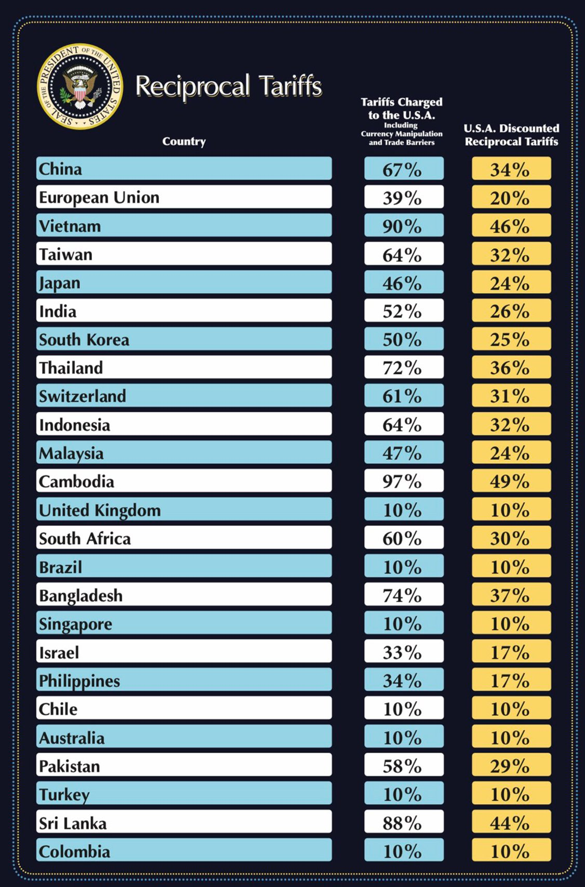
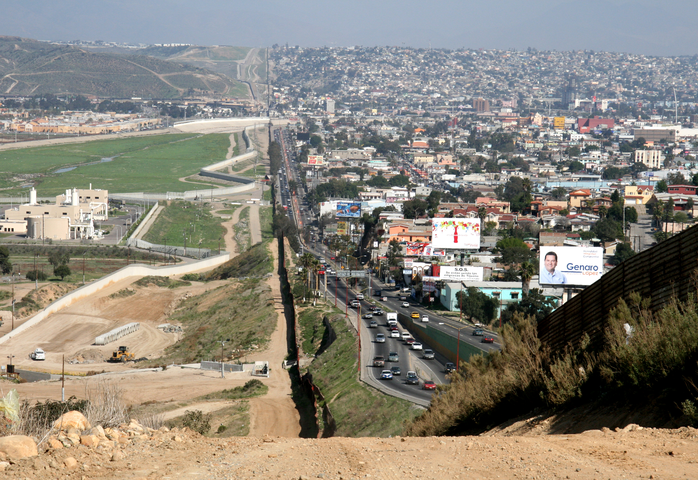
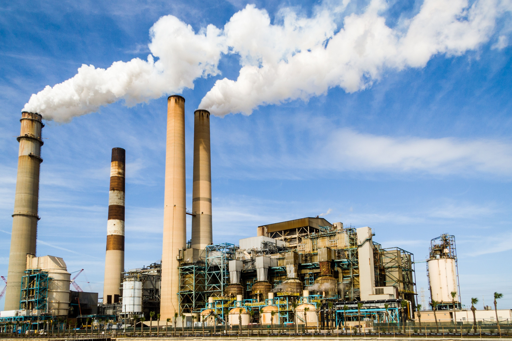
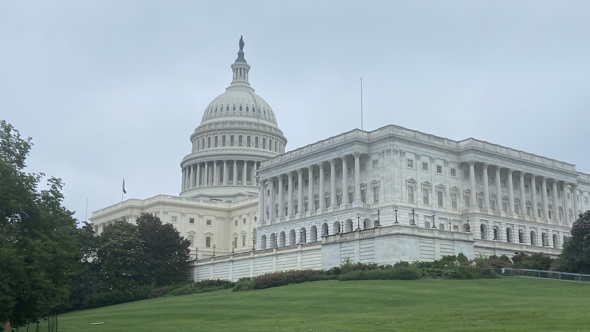

Análisis de cuatro áreas clave de su segundo mandato (2025-)
La imposición masiva de aranceles a China, México, Canadá y la Unión Europea ha generado una guerra comercial que eleva los precios de bienes de consumo y afecta especialmente a las clases medias y bajas. Aunque se presenta como “protección a la industria estadounidense”, los estudios económicos muestran un aumento de la inflación y una pérdida de competitividad a largo plazo.

Gráfico oficial de aranceles recíprocos anunciados en 2025
Las redadas masivas, la expansión de centros de detención y la política de separación familiar han sido criticadas por organizaciones de derechos humanos por su severidad y por no resolver las causas estructurales de la migración. El enfoque punitivo ha generado tensión diplomática con países vecinos.

Muro fronterizo entre Estados Unidos y México
La administración ha desmantelado regulaciones ambientales, favorecido la expansión de combustibles fósiles y retirado nuevamente compromisos internacionales sobre cambio climático. Esto genera preocupación por el futuro de las generaciones más jóvenes.

Contaminación industrial por combustibles fósiles
Las constantes confrontaciones con el Congreso, el poder judicial y los medios de comunicación han erosionado la confianza en las instituciones. Críticos advierten que el uso de decretos ejecutivos y la polarización debilitan el sistema de pesos y contrapesos que caracteriza a la democracia estadounidense.

El Capitolio de Estados Unidos, símbolo de la democracia
Aunque algunas medidas buscan fortalecer la soberanía económica y la seguridad fronteriza, el costo social, económico, ambiental e institucional ha sido alto. Una crítica constructiva no niega los problemas reales, sino que cuestiona si los métodos elegidos son los más eficaces y justos a largo plazo.